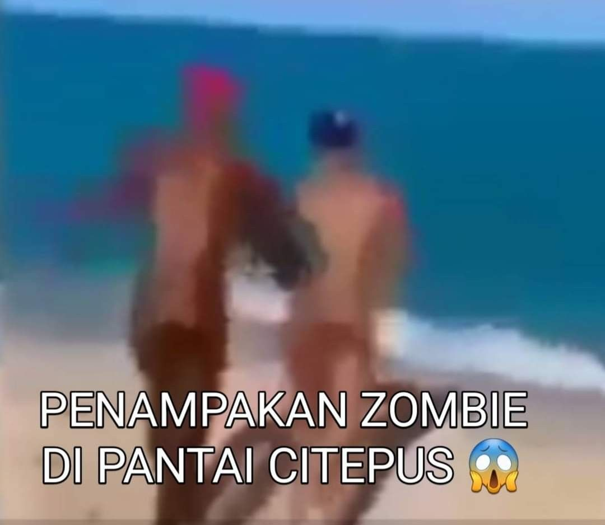

Kemudian, pemuda itu dan temannya mulai melaksanakan rencana mereka dengan penuh semangat. Mereka bekerja keras sepanjang malam, mengikuti setiap langkah yang telah mereka rencanakan. Namun, seiring berjalannya waktu, mereka menyadari bahwa rencana tersebut tidak berjalan sesuai harapan. Mereka menghadapi berbagai rintangan dan kesulitan yang membuat mereka merasa putus asa. Akhirnya, mereka menyadari bahwa kekayaan sejati tidak datang dari jalan pintas, tetapi dari kerja keras, ketekunan, dan kejujuran. Mereka belajar untuk menghargai proses dan menikmati perjalanan hidup mereka bersama.
